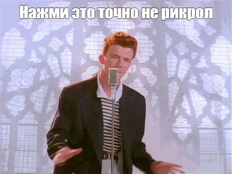
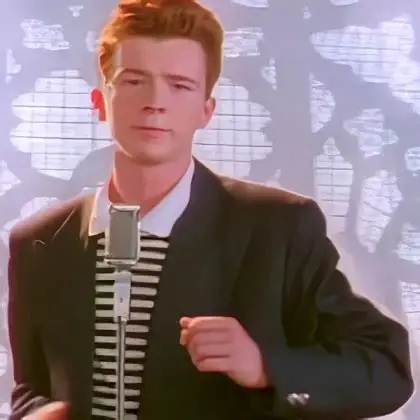
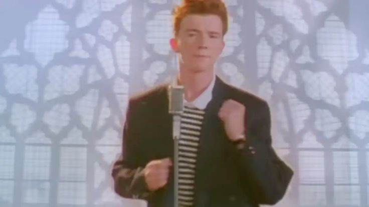
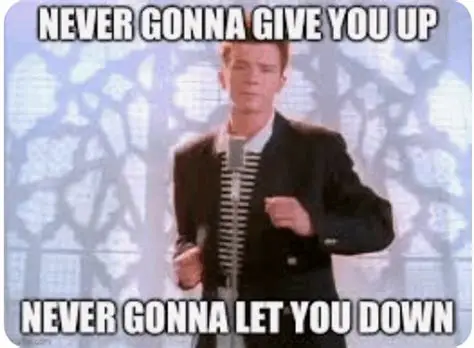

Привет, добро пожаловать на один из моих тестовых сайтах(поздравляю вы зарикролены). Здесь вы узнаете историю интернет мена "Рикролл". Приятного чтения.

Дебютный сингл Рика Эстли вышел в 1987 году и мгновенно стал мировым хитом, возглавив чарты Великобритании и США. Клип, где певец исполняет песню и забавно танцует, также был очень успешным.
Сам интернет-розыгрыш появился в мае 2007 года на имиджборде 4chan. В то время Rockstar Games выпустила трейлер Grand Theft Auto IV, но сайт компании не выдержал наплыва посетителей и рухнул. В разделе, посвящённом видеоиграм, появилась ссылка, которая позиционировалась как зеркало страницы с трейлером, но на самом деле вела на клип «Never Gonna Give You Up» на YouTube.
К апрелю 2008 года рикроллинг вышел далеко за пределы 4chan и привлёк внимание СМИ. Опрос SurveyUSA показал, что не менее 18 миллионов американцев стали жертвами розыгрыша. Клип на YouTube набрал около 25 миллионов просмотров.
Суть мема строится на обмане ожиданий. Жертве присылают гиперссылку под предлогом чего-то актуального: важного политического заявления, слива сюжета фильма, спортивных хайлайтов, ответа на вопрос или, как в вашем предыдущем вопросе, полезной иконки для сайта. Человек нажимает на ссылку, ожидая увидеть нужную информацию, а вместо этого попадает на музыкальное видео, где Рик Эстли поет свой главный хит.





